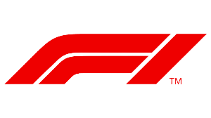

F1
Esta página es una pequeña inrodcucción a este mundo de las carreras que
cada año conmociona más y más a espectadores de todo el mundo siendo
considerado la categoría mas grande del mundo.

En esta página se podran observar varios apartados para introducirte en este deporte.
- Introducción a la historia
- En la actualidad
- España en la F1
- Conclusión
Introducción a la historia
La historia se remonta por el año 1950, y para ser exactos el primer gran premio fue en Gran Bretaña, en el mñitico circuito de Silverstone.
Ganado por el Italiano Guiseppe Farina donde tambien ese mismo año gano el Campeonato de 1950
tras vencer a su propio compañero de equipo, el argentino Juan Manuel Fangio.
En la actualidad
A dia de hoy, ha cambiado mucho tanto los monoplazas, como los circuitos e incluso el reglamento y los pilotos y su seguridad. A día de hoy predomina un piloto inglés
que va en busca de su 8º Campeonato del Mundo, su nombre es Lewis Hamilton y su palmares habla por si solo consiguiendo en el pasado Gran Premio de Rusia la victoria
nº 100 de su carrera. Esta es la clasificación antual de pilotos del campeonato.
| Clasificación de pilotos |
|
Posición
|
Nombre
|
Puntos
|
| 1º |
Lewis Hamilton |
246.5 Puntos |
| 2º |
Max Verstappen |
244.5 Puntos |
| 3º |
Valtteri Bottas |
151 Puntos |
| 4º |
Lando Norris |
139 Puntos |
| 5º |
Sergio Pérez |
120 Puntos |
Hablemos un poco acerca de Lewis Hamilton, piloto británico cuyo nacimiento fue en Stevenage, Reino Unido en un 7 de enero de 1985, actualmente tiene una edad de 36 años.
Su carrera deportiva en la categoría más grande del mundo empezó en el año 2007 y fue en la escudería Mclaren, cuyo compañero de escudería sería el piloto español
conocido mundialmente, Fernando Alonso. Ese mismo año, quedó segundo en el Campeonato de Pilotos del año 2007, lo ganó el finlandes Kimi Räikkönen en la última carreca
del calendario. El año siguiente se proclamó Campeón del Mundo de la Formula 1 y también como el campeón más joven en ese momento, ya lo demas, es historia.
España en la F1
Voy a nombrar brevemente algunos pilotos españoles mas conocidos y un breve resumen de su carrera deportiva.
-
Pedro Martínez de la Rosa. Pedro hizo su debut en 1999, y su carrera se extendió hasta el año 2012 en lo que ha destacar es su podio en el Gran Premio de Hungría
de 2006. Actualmente es comentarista en el canal de televisión DAZN y corrió con Arrows, Jaguar, Mclaren, Sauber, HRT y Scuderia Ferrari (como probador).
-
Fernando Alonso. Es el piloto mas exitoso de España en la F1 y actualmente sigue compitiendo en la categoría reina. Debutó en Minardi en el año 2001 y con Renault
anoto su primera victoria y sus dos mundiales de F1 (2005 y 2006). Despues de muchos años de subcampeón y fallos con los equipos, Fernando decidió retirarse de la Formula 1
para volver en el año 2021 tras ganar las 24 Horas de Le Mans en el año 2018 y 2019 y tras haber participado en las 500 Millas de Indianápolis.
-
Carlos Sainz Jr. Carlos Sainz Jr., hijo del conocido bicampeón del mundo de rally, Carlos Sainz, debutó en la F1 en el año 2015 tras haber ganado el año
anterior las World Series by Renault. Fue en el equipo Toro Rosso y pasó por legendarios equipos como Renault, Mclaren y finalmente este año en la Scuderia Ferrari. Carlos
a pesar de ser un piloto muy joven, es talentoso y piensa ir a por todo al igual que su padre.
Conclusión
Este deporte ha brindado grandes alegrias a nuestra peninsula y siempre es un agrado ver monoplazas llenos de tecnología en unos circuitos a una velocidad de vértigo.
Tambien he escuchado que la Formula 1 es aburrrida y dicen que siempre gana el mismo piloto, y a decir verdad es un deporte apasionante y lleno de amoción hasta el
último instante. Una emoción vuelta tras vuelta con mucho drama tanto dentro como fuera de ella
"La F1 no es impredecible"
Fuente de búsqueda de datos de esta página aquí
También proporcionaré el reglamento de la FIA de las regulaciones técnicas de este año por si te interesa en PDF, click aquí
Ir al inicio de la página
Ir a pilotos españoles
Los pilotos más famosos
Lewis Hamilton
Es uno de los pilotos más legendarios de la última epoca teniendo en su palmares una suma de 7 campeonatos del mundo de pilotos estando solo a falta de un campeonato para ser el
piloto mas grande de la historia, con una suma de ya 102 victorias en la categoria reina. Un legado sin precendentes.
Michael Schumacher
El famoso "Kaiser" de la Formula 1 es uno de los pilotos mas idolatrados de toda la historia por todo lo que cambio este deporte y todo lo que hizo, con 7 campeonatos del mundo en
su palmares y con una cantidad abrumadora de records rotos por este piloto, es el mejor de la historia de la Formula 1.